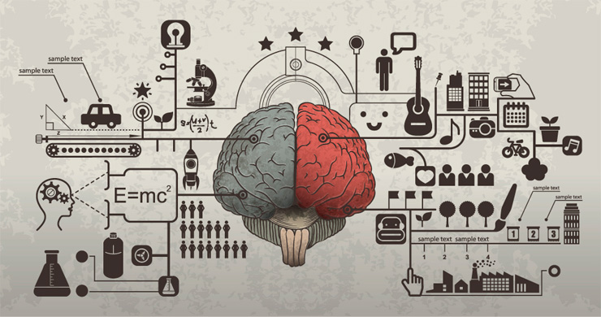

Bem como nossos músculos, nosso cérebro também se fortifica com repetições, porém, um esforço mental é um pouco mais complicado que um esforço físico. Nosso músculo cresce e se fortalece à base do rompimento das fibras musculares, ou seja, você literalmente machuca seus músculos e isso os fazem inchar, repetindo essa agressão às fibras musculares, elas...
[Memorização] Saiba como tunar o seu cérebro
Alex Villanova • Março 24, 2016 • Nenhum comentário
